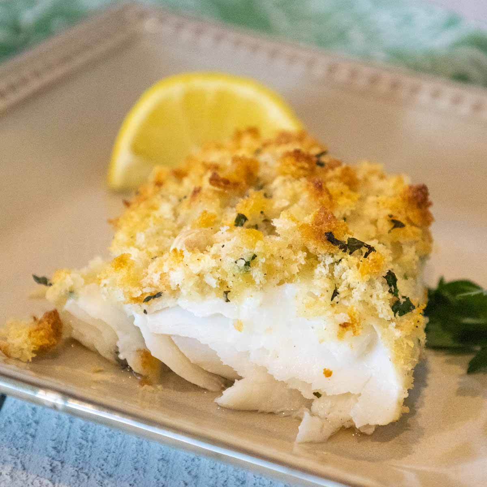

Description
Haddock is a delicious white fish that is easily cooked and makes for a great source of protein.
- Haddock
- Olive oil
- Spices of your choosing
Cooking Steps
- Wash the fish under running water.
- Cover a metal tray with aluminum foil.
- Coat the foil with a thin layer of olive oil not directly to the fish as doing so will make the edges cook quicker than the rest of the fish.
- Preheat the oven to 400 degrees fahrenheit on the bake setting.
- Place the fish in the oven and allow to cook for 15-17 minutes.
- Remove the fish from the oven and apply your choice of spices. Use caution for it will be hot!